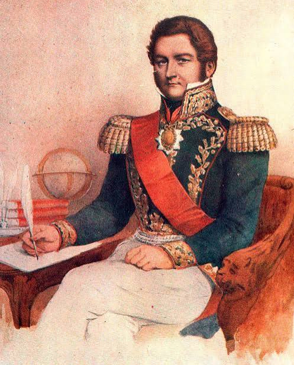
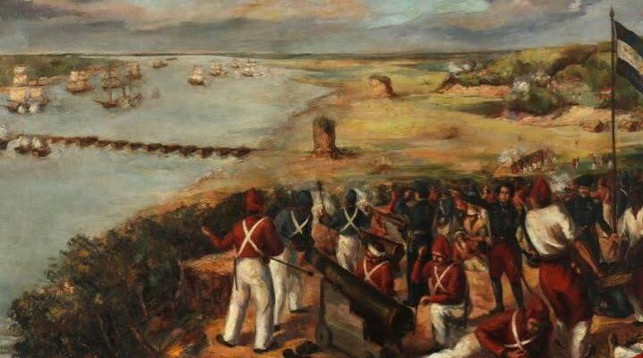

Importancia Histórica y Cultural
El legado institucional más duradero de Juan Manuel de Rosas fue la consolidación de la Confederación Argentina bajo el marco del Pacto Federal de 1831. Originalmente firmado por Buenos Aires, Santa Fe y Entre Ríos (y luego Corrientes), este tratado se convirtió en la piedra angular de la organización nacional. Rosas utilizó este acuerdo para articular las relaciones entre las provincias en un momento de extrema fragmentación, actuando como el árbitro supremo del país. A pesar de su discurso fuertemente federal, su legado en esta materia es paradójico:
Centralismo económico:
Concentró los ingresos de la Aduana en Buenos Aires, negándose a nacionalizar los recursos portuarios o a permitir la libre navegación de los ríos interiores, lo que asfixió las economías provinciales.Delegación de las Relaciones Exteriores:
Logró que el resto de los gobernadores le otorgaran el manejo de la política exterior, convirtiéndose de facto en la máxima autoridad de una nación que legalmente aún no estaba unificada.Negativa constitucional:
Postergó sistemáticamente la convocatoria a un congreso constituyente bajo el argumento de que el país "no estaba preparado" para una constitución, prefiriendo un modelo de pactos interprovinciales que él pudiera controlar.Curiosidades De Juan Manuel de Rosas
Las efemérides nos ayudan a ubicar en el tiempo los hechos más importantes de la vida del prócer y del contexto en el que vivió.
Frase Célebre
"La soberanía del país es el primer deber de todo gobierno"
Galería de Imágenes

